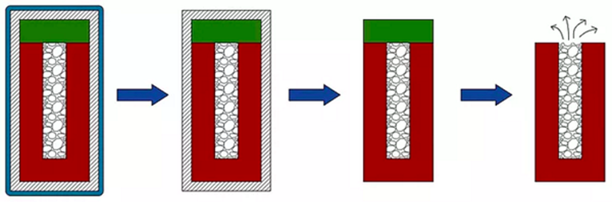

Virtual Intellectual Property Lab - Oral Delivery of Probiotics
Our assignment was to create a novel polymeric system as part of a comprehensive engineering solution to an existing medical problem and protect our solution within the class with our own patent portfolio. We chose to design an oral probiotic delivery system.
Probiotics maintain a healthy gut and are a viable solution to numerous diseases caused by inflammation of the digestive tract. Optimal design of a delivery system must be developed to ensure that 1) the probiotics remain viable as they travel through the acidic conditions of the stomach, 2) are deposited in the colon at the right timescale, and 3) are encapsulated in an easily ingestible form. Thus, our oral probiotic delivery system was developed to include lyophilized bacteria for simple storage in a rectangular reservoir. The release of the probiotics is dependent upon degradation of a permeable layer on one side of the system. The other through sides are covered by a non-biodegradable, impermeable layer that facilitates release from only one side of the system. Finally, the entire system is coated to increase ease of ingestion and swallowability for the patient. Throughout the development of this novel system, numerous claims detailing the composition of matter, processes, and methods of use were incorporated along with license swaps with other groups.

Process of device degradation and probiotic delivery
See our presentation here